124
Page 28
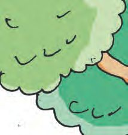
Page 29
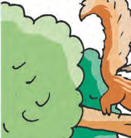
7 More and Less
125
Page 30
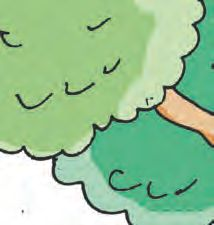
Let us get a big jackfruit.
We must use this stick to reach the big one.
We can get it with my stick too!.
126
Which stick is longer? Put a ✓ mark
Page 31
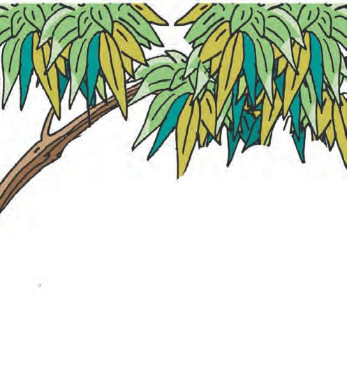
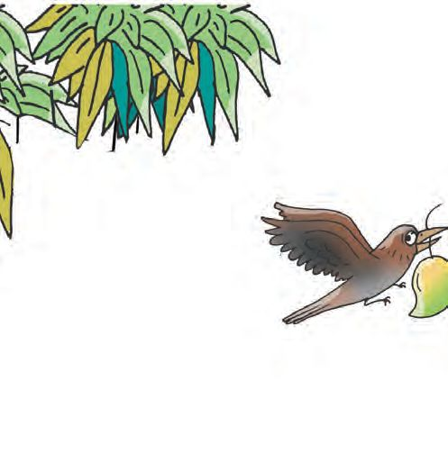
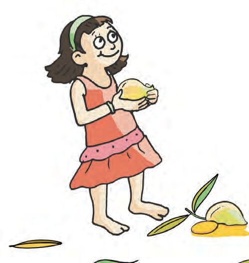
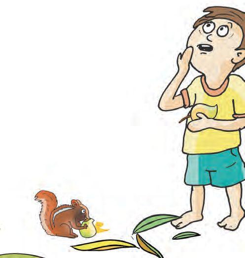
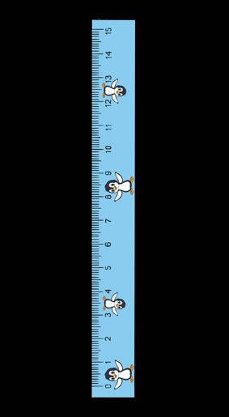
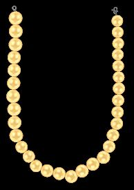
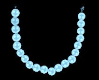
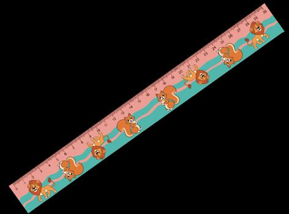

Tick the box with the longer one.
127
Page 32
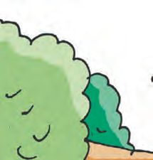
Kite flyers. Seeing friends flying kites, Ajinav came running. Whose kite is flying highest? Colour the string of the highest kite red.
Aradhya
128
Vaiga
Ithal, Amar
Ameen
Ajinav
Page 33
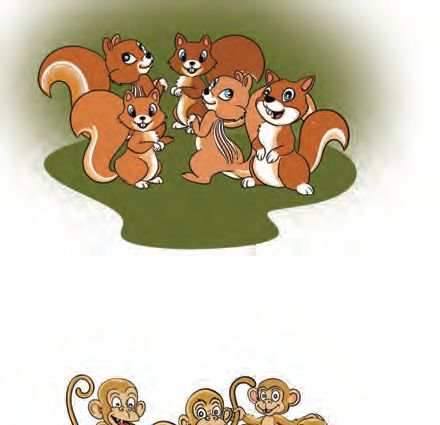
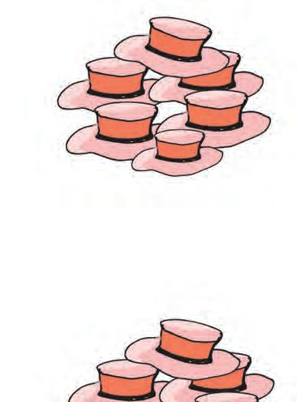
Mom! I cannot lift this jackfruit.
OK! I will take that. You take this small one.
129
Page 34
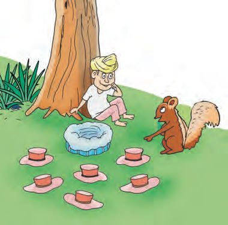
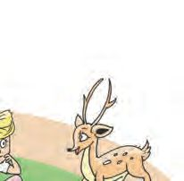
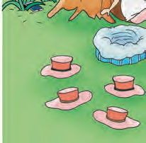
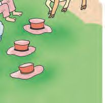
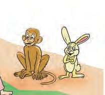
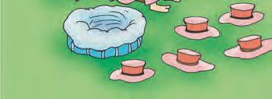

Look at the pictures. Circle the heavier thing in each row.
130
Page 35
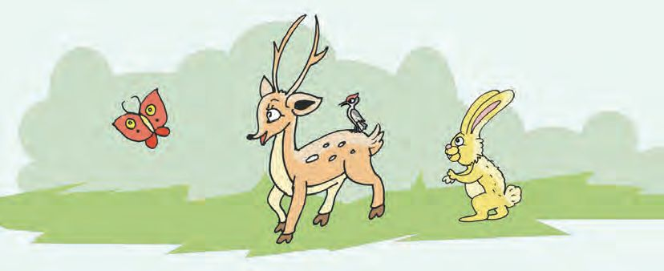
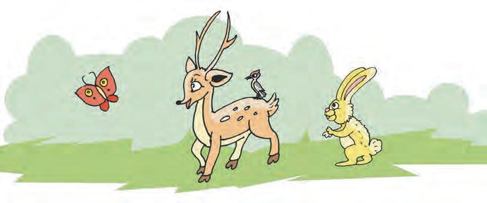
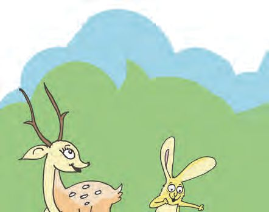
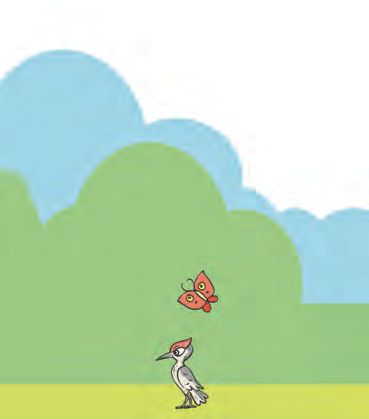
Tick the heavier
Which boat carries the heavier load? Tick it.
131
Page 36
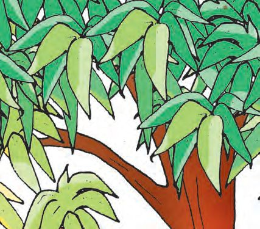
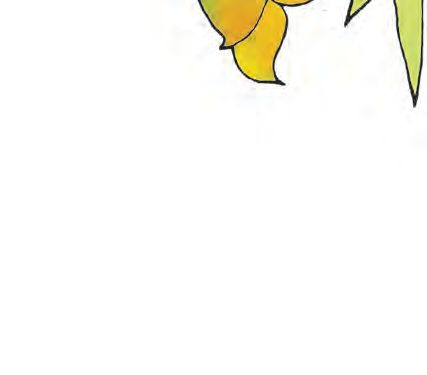
Let us Colour.
Who is lifting more weight? Colour the circle.
More and more If higher fruits you want to pick What you need is a longer stick. If you want your kites fly higher You must make their threads longer. If you want to lift heavy things What you need are very strong limbs. If you want to drink quite a lot You have to get a bigger pot.
132
Page 37
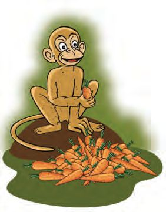
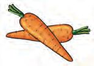
Feeling thirsty
Dad, I am thirsty!
Drink up!
I will make some lime juice
You have made a glass full. But I can drink it all.
Which glass has more juice?
133
Page 38
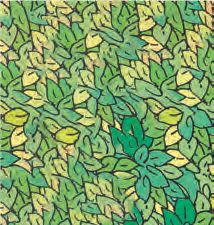
See and tell 1
2
3
4
5
6
Look at the pictures. What all things does each of this usually hold?
1 2 3 4 5 6 134
Page 39
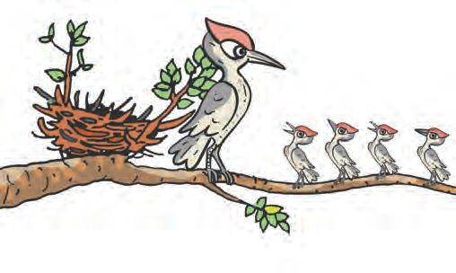
Which of these can hold more water than all others? Draw it below and colour it.
135